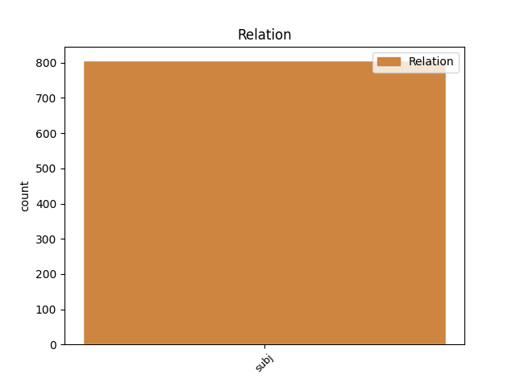
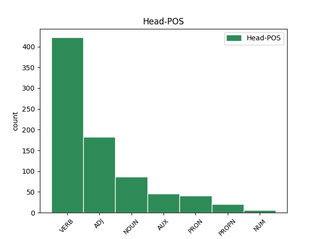
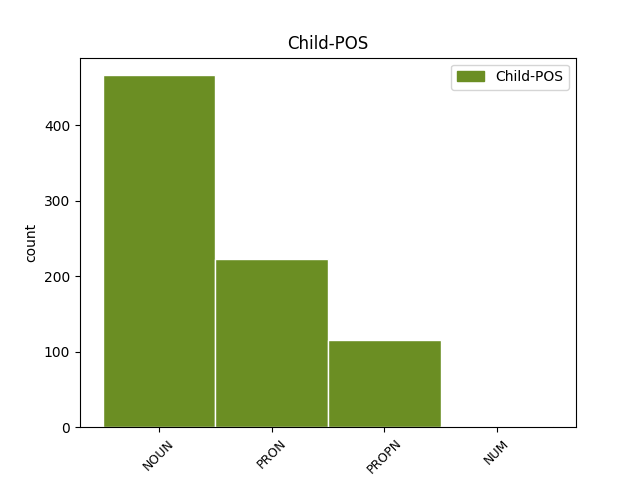

Distribution of features within this leaf



Agreement Rules sorted by frequency.
- When the dependent token is the subject(subj) of the head token, and the dependent token is NOUN.
1 οὗτοι _ _ _ _ 0 _ _ _
2 οἱ _ _ _ _ 0 _ _ _
3 λόγοι λόγος NOUN Nb Case=Nom|Gender=Masc|Number=Plur 4 subj _ ref=REV_22.6
4 πιστοὶ πιστός ADJ A- Case=Nom|Degree=Pos|Gender=Masc|Number=Plur 0 _ _ _
5 καὶ _ _ _ _ 0 _ _ _
6 ἀληθινοί _ _ _ _ 0 _ _ _
7 καὶ _ _ _ _ 0 _ _ _
8 ὁ _ _ _ _ 0 _ _ _
9 κύριος _ _ _ _ 0 _ _ _
10 ὁ _ _ _ _ 0 _ _ _
11 θεὸς _ _ _ _ 0 _ _ _
12 τῶν _ _ _ _ 0 _ _ _
13 πνευμάτων _ _ _ _ 0 _ _ _
14 τῶν _ _ _ _ 0 _ _ _
15 προφητῶν _ _ _ _ 0 _ _ _
16 ἀπέστειλεν _ _ _ _ 0 _ _ _
17 τὸν _ _ _ _ 0 _ _ _
18 ἄγγελον _ _ _ _ 0 _ _ _
19 αὐτοῦ _ _ _ _ 0 _ _ _
20 δεῖξαι _ _ _ _ 0 _ _ _
21 τοῖς _ _ _ _ 0 _ _ _
22 δούλοις _ _ _ _ 0 _ _ _
23 αὐτοῦ _ _ _ _ 0 _ _ _
24 ἃ _ _ _ _ 0 _ _ _
25 δεῖ _ _ _ _ 0 _ _ _
26 γενέσθαι _ _ _ _ 0 _ _ _
27 ἐν _ _ _ _ 0 _ _ _
28 τάχει _ _ _ _ 0 _ _ _
1 Καὶ _ _ _ _ 0 _ _ _
2 ἐγώ ἐγώ PRON Pp Case=Nom|Gender=Masc|Number=Sing|Person=1|PronType=Prs 5 subj _ ref=REV_22.8
3 Ἰωάννης _ _ _ _ 0 _ _ _
4 ὁ _ _ _ _ 0 _ _ _
5 βλέπων βλέπω VERB V- Case=Nom|Gender=Masc|Number=Sing|Tense=Pres|VerbForm=Part|Voice=Act 0 _ _ _
6 καὶ _ _ _ _ 0 _ _ _
7 ἀκούων _ _ _ _ 0 _ _ _
8 ταῦτα _ _ _ _ 0 _ _ _
1 Χριστὸς Χριστός PROPN Ne Case=Nom|Gender=Masc|Number=Sing 4 subj _ ref=HEB_3.6
2 δὲ _ _ _ _ 0 _ _ _
3 ὡς _ _ _ _ 0 _ _ _
4 υἱὸς υἱός NOUN Nb Case=Nom|Gender=Masc|Number=Sing 0 _ _ _
5 ἐπὶ _ _ _ _ 0 _ _ _
6 τὸν _ _ _ _ 0 _ _ _
7 οἶκον _ _ _ _ 0 _ _ _
8 αὐτοῦ _ _ _ _ 0 _ _ _
9 οὗ _ _ _ _ 0 _ _ _
10 οἶκός _ _ _ _ 0 _ _ _
11 ἐσμεν _ _ _ _ 0 _ _ _
12 ἡμεῖς _ _ _ _ 0 _ _ _
13 ἐάν _ _ _ _ 0 _ _ _
14 τὴν _ _ _ _ 0 _ _ _
15 παρρησίαν _ _ _ _ 0 _ _ _
16 καὶ _ _ _ _ 0 _ _ _
17 τὸ _ _ _ _ 0 _ _ _
18 καύχημα _ _ _ _ 0 _ _ _
19 τῆς _ _ _ _ 0 _ _ _
20 ἐλπίδος _ _ _ _ 0 _ _ _
21 μέχρι _ _ _ _ 0 _ _ _
22 τέλους _ _ _ _ 0 _ _ _
23 βεβαίαν _ _ _ _ 0 _ _ _
24 κατάσχωμεν _ _ _ _ 0 _ _ _
1 ὁ _ _ _ _ 0 _ _ _
2 εἷς εἷς NUM Ma Case=Nom|Gender=Masc|Number=Sing 3 subj _ ref=LUKE_18.10
3 Φαρισαῖος Φαρισαῖος NOUN Nb Case=Nom|Gender=Masc|Number=Sing 0 _ _ _
4 καὶ _ _ _ _ 0 _ _ _
5 ὁ _ _ _ _ 0 _ _ _
6 ἕτερος _ _ _ _ 0 _ _ _
7 τελώνης _ _ _ _ 0 _ _ _
Disagree Examples:
1 ἀριθμὸν _ _ _ _ 0 _ _ _
2 δὲ _ _ _ _ 0 _ _ _
3 ἑπτακαίδεκα _ _ _ _ 0 _ _ _
4 καὶ _ _ _ _ 0 _ _ _
5 ἑκατόν _ _ _ _ 0 _ _ _
6 καὶ _ _ _ _ 0 _ _ _
7 τούτων _ _ _ _ 0 _ _ _
8 ἀπέφθου _ _ _ _ 0 _ _ _
9 χρυσοῦ χρυσός NOUN Nb Case=Gen|Gender=Masc|Number=Sing 0 _ _ _
10 τέσσερα τέσσαρες NUM Ma Case=Nom|Gender=Neut|Number=Plur 9 subj _ ref=1.50.2
11 τρίτον _ _ _ _ 0 _ _ _
12 ἡμιτάλαντον _ _ _ _ 0 _ _ _
13 ἕκαστον _ _ _ _ 0 _ _ _
14 ἕλκοντα _ _ _ _ 0 _ _ _
15 τὰ _ _ _ _ 0 _ _ _
16 δὲ _ _ _ _ 0 _ _ _
17 ἄλλα _ _ _ _ 0 _ _ _
18 ἡμιπλίνθια _ _ _ _ 0 _ _ _
19 λευκοῦ _ _ _ _ 0 _ _ _
20 χρυσοῦ _ _ _ _ 0 _ _ _
21 σταθμὸν _ _ _ _ 0 _ _ _
22 διτάλαντα _ _ _ _ 0 _ _ _
1 ἀριθμὸν _ _ _ _ 0 _ _ _
2 δὲ _ _ _ _ 0 _ _ _
3 ἑπτακαίδεκα _ _ _ _ 0 _ _ _
4 καὶ _ _ _ _ 0 _ _ _
5 ἑκατόν _ _ _ _ 0 _ _ _
6 καὶ _ _ _ _ 0 _ _ _
7 τούτων _ _ _ _ 0 _ _ _
8 ἀπέφθου _ _ _ _ 0 _ _ _
9 χρυσοῦ _ _ _ _ 0 _ _ _
10 τέσσερα _ _ _ _ 0 _ _ _
11 τρίτον _ _ _ _ 0 _ _ _
12 ἡμιτάλαντον _ _ _ _ 0 _ _ _
13 ἕκαστον _ _ _ _ 0 _ _ _
14 ἕλκοντα _ _ _ _ 0 _ _ _
15 τὰ _ _ _ _ 0 _ _ _
16 δὲ _ _ _ _ 0 _ _ _
17 ἄλλα _ _ _ _ 0 _ _ _
18 ἡμιπλίνθια ἡμιπλίνθιον NOUN Nb Case=Nom|Gender=Neut|Number=Plur 20 subj _ ref=1.50.2
19 λευκοῦ _ _ _ _ 0 _ _ _
20 χρυσοῦ χρυσός NOUN Nb Case=Gen|Gender=Masc|Number=Sing 0 _ _ _
21 σταθμὸν _ _ _ _ 0 _ _ _
22 διτάλαντα _ _ _ _ 0 _ _ _
1 τοῦ _ _ _ _ 0 _ _ _
2 μὲν _ _ _ _ 0 _ _ _
3 δὴ _ _ _ _ 0 _ _ _
4 πρώτου _ _ _ _ 0 _ _ _
5 κύκλου _ _ _ _ 0 _ _ _
6 οἱ _ _ _ _ 0 _ _ _
7 προμαχεῶνες _ _ _ _ 0 _ _ _
8 εἰσὶ _ _ _ _ 0 _ _ _
9 λευκοί _ _ _ _ 0 _ _ _
10 τοῦ _ _ _ _ 0 _ _ _
11 δὲ _ _ _ _ 0 _ _ _
12 δευτέρου _ _ _ _ 0 _ _ _
13 μέλανες _ _ _ _ 0 _ _ _
14 τρίτου _ _ _ _ 0 _ _ _
15 δὲ _ _ _ _ 0 _ _ _
16 κύκλου κύκλος NOUN Nb Case=Gen|Gender=Masc|Number=Sing 17 subj _ ref=1.98.5
17 φοινίκεοι φοινίκεος ADJ A- Case=Nom|Degree=Pos|Gender=Masc|Number=Plur 0 _ _ _
18 τετάρτου _ _ _ _ 0 _ _ _
19 δὲ _ _ _ _ 0 _ _ _
20 κυάνεοι _ _ _ _ 0 _ _ _
21 πέμπτου _ _ _ _ 0 _ _ _
22 δὲ _ _ _ _ 0 _ _ _
23 σανδαράκινοι _ _ _ _ 0 _ _ _
1 ἔστι _ _ _ _ 0 _ _ _
2 δὲ _ _ _ _ 0 _ _ _
3 τοῦτο _ _ _ _ 0 _ _ _
4 τὸ _ _ _ _ 0 _ _ _
5 ἱρόν _ _ _ _ 0 _ _ _
6 ὡς _ _ _ _ 0 _ _ _
7 ἐγὼ _ _ _ _ 0 _ _ _
8 πυνθανόμενος _ _ _ _ 0 _ _ _
9 εὑρίσκω _ _ _ _ 0 _ _ _
10 πάντων _ _ _ _ 0 _ _ _
11 ἀρχαιότατον _ _ _ _ 0 _ _ _
12 ἱρῶν _ _ _ _ 0 _ _ _
13 ὅσα ὅσος PRON Pr Case=Nom|Gender=Neut|Number=Plur|PronType=Rel 16 subj _ ref=1.105.3
14 ταύτης _ _ _ _ 0 _ _ _
15 τῆς _ _ _ _ 0 _ _ _
16 θεοῦ θεός NOUN Nb Case=Gen|Gender=Fem|Number=Sing 0 _ _ _
1 τούτων _ _ _ _ 0 _ _ _
2 δὲ _ _ _ _ 0 _ _ _
3 κατύπερθε _ _ _ _ 0 _ _ _
4 πρὸς _ _ _ _ 0 _ _ _
5 νότον _ _ _ _ 0 _ _ _
6 ἄνεμον _ _ _ _ 0 _ _ _
7 ἐν _ _ _ _ 0 _ _ _
8 τῇ _ _ _ _ 0 _ _ _
9 θηριώδεϊ _ _ _ _ 0 _ _ _
10 οἰκέουσι _ _ _ _ 0 _ _ _
11 Γαράμαντες _ _ _ _ 0 _ _ _
12 οἳ ὅς PRON Pr Case=Nom|Gender=Masc|Number=Plur|PronType=Rel 15 subj _ ref=4.174.1
13 πάντα _ _ _ _ 0 _ _ _
14 ἄνθρωπον _ _ _ _ 0 _ _ _
15 φεύγουσι φεύγω VERB V- Case=Gen|Gender=Masc|Number=Plur|Tense=Pres|VerbForm=Part|Voice=Act 0 _ _ _
16 καὶ _ _ _ _ 0 _ _ _
17 παντὸς _ _ _ _ 0 _ _ _
18 ὁμιλίην _ _ _ _ 0 _ _ _
19 καὶ _ _ _ _ 0 _ _ _
20 οὔτε _ _ _ _ 0 _ _ _
21 ὅπλον _ _ _ _ 0 _ _ _
22 ἐκτέαται _ _ _ _ 0 _ _ _
23 ἀρήιον _ _ _ _ 0 _ _ _
24 οὐδὲν _ _ _ _ 0 _ _ _
25 οὔτε _ _ _ _ 0 _ _ _
26 ἀμύνεσθαι _ _ _ _ 0 _ _ _
27 ἐπιστέαται _ _ _ _ 0 _ _ _